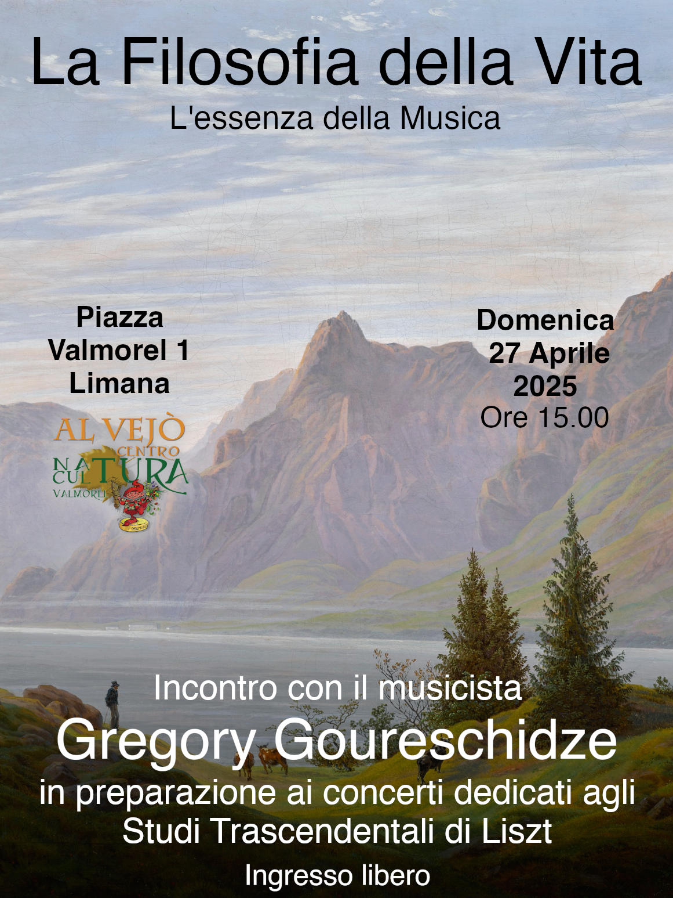

Conferenza
"La Filosofia della Vita"
Presentazione degli Studi Trascendentali di Franz Liszt
In preparazione dei concerti di questa estate dedicati agli Studi Trascendentali di Franz Liszt, siamo lieti di proporre un'ultima conferenza filosofico-letteraria volta ad esplorare il profondo significato di queste opere ed il loro fondamento spirituale, religioso e filosofico.
In questo incontro con il musicista Gregory Goureschidze, organizzato presso la Sala polifunzionale in Via Tomaso Da Rin a Laggio di Cadore in data 4 Luglio alle ore 20.45, si vuole completare il percorso iniziato insieme durante gli scorsi incontri per ricercare i valori dei grandi maestri tramite la spiegazione e la lettura di diversi testi.
Il maestro Gregory presenterà i 12 Studi Trascendentali attraverso la lettura di testi dell'autore stesso e di diversi Grandi Maestri che ne hanno riconosciuto ed apprezzato l'incredibile valore.
Come sarà esposto durante l'incontro, tramite queste opere Liszt riesce ad esprimere tutta la diversità della creazione ed i molteplici colori della vita. Per poter catturare la profonda essenza di queste opere è quindi fondamentale vivere in sé la religiosità di Liszt, senza la quale raggiungere l'idea autentica celata dietro questi grandi capolavori risulta impossibile.
Nei nostri tempi moderni la musica è vista esclusivamente come diletto e divertimento materialistico, sensibile e superficiale, nell'epoca antica essa era la via per apprendere l'ordine di tutte le cose, la scienza dei rapporti armonici dell'universo ed essa si basava su principi immutabili ai quali nulla può nuocere.
L'incontro offrirà importante occasione di dialogo, riflessione e meditazione per tutti coloro che desiderano aprire la loro anima alla vera Arte ed alla vera Filosofia.
Una guida contenente i brani principali che saranno letti e presentati dal maestro sarà resa disponibile nell'archivio a seguito della conferenza.
Apri la guida della conferenza

Concerti della sessione estiva
• Venerdì 25 Luglio 2025, Ore 21:00
Sala Cos.Mo - Via Arsenale 15, Pieve di Cadore
Ulteriori date saranno annunciate a seguire, agli iscritti al calendario concerti arriverà comunicazione via email.
Calendario dei concerti
Iscriviti al calendario dei concerti per ricevere direttamente sul tuo indirizzo email personale i prossimi appuntamenti. Sarete notificati per ogni data stabilita con informazioni su luogo ed ora.
Iscriviti
RECITAL DI PIANOFORTE - ESTATE 2025
Una guida completa al programma del concerto, all'autore ed alle sue opere è disponibile nell'archivio.
Apri la guida
Introduzione al concerto
Ciò che si richiede al pianista
No, la tecnica non è e non sarà mai l'alfa e l'omega dell'arte pianistica, e nemmeno delle altre arti.
Tuttavia predico naturalmente ai miei scolari: Fatevi una tecnica e che sia ben basata. Per formare un grande artista si devono realizzare molteplici condizioni, e poichè ciò è dato solo a pochi, un vero genio costituisce una grande rarità.
Una tecnica perfetta in sè e per sè la troviamo in tante pianole ben costruite. Eppure un grande pianista dev'essere prima di tutto un forte tecnico, ma la tecnica, che è in fondo soltanto una parte dell'arte pianistica, non sta solo nelle dita e nelle articolazioni, o nella forza e nella resistenza. La più grande tecnica ha la sua sede nel cervello, essa si compone di geometria, valutazione delle distanze e ordine sapiente. Ma anche con ciò siamo appena al principio, perchè alla vera tecnica appartiene anche il tocco e soprattutto l'uso del pedale.
Al grande artista inoltre occorre una intelligenza non comune, cultura, una vasta educazione in tutte le discipline musicali e letterarie, e nelle questioni della vita. L'artista deve avere anche carattere. Se manca una di queste qualità, la lacuna si manifesta in ogni frase che egli eseguisce. Si aggiungono ancora sentimento, temperamento, fantasia, poesia e infine quel magnetismo personale che alle volte rende capaci di portare allo stesso stato d'animo quattromila persone estranee, riunite per caso. Inoltre si esige ancora presenza di spirito, dominio sulle proprie sensazioni in condizioni di ambiente irritanti, capacità di tenere desta l'attenzione del pubblico, e finalmente bisogna dimenticare il pubblico nei “momenti psicologici”.
Si deve aggiungere ancora il senso della forma, dello stile, la virtù del buon gusto e dell'originalità? Come mai si potrebbe finire se si volesse elencare tutto ciò che si può richiedere? Ma prima di tutto si tenga presente una qualità essenziale: Colui per la cui anima non è passata una vita, non dominerà mai il linguaggio dell’arte.
Programma del concerto
12 Studi Trascendentali di Franz Liszt
Franz Liszt fu un compositore ungherese, nato nel 1811 a Raiding e morto del 1886 a Bayreuth, padre del pianoforte moderno ed inventore del recitale. Egli rivoluzionò la tecnica e l'Arte pianistica, ampliando le possibilità espressive dello strumento e raggiungendo livelli di virtuosismo ineguagliabili.
È importante precisare, parlando della tecnica, che questa per Liszt veniva considerata come espressione dell'anima. Egli infatti scrive: "La tecnica deve venire dall'anima, non dalla meccanica!". Per tale ragione, all'ultima versione di quest'opera viene attribuito dal compositore stesso il titolo "Trascendentali".
Questo ciclo di 12 studi rappresenta una vetta irraggiungibile dell'Arte pianistica.
Esistono 3 versioni di quest'opera: la prima risale al 1826 quando Liszt aveva solamente 15 anni e la sua intenzione era scrivere 48 esercizi ma si fermò a 12.
La seconda versione viene completata nel 1837 con il titolo "12 Grandi Studi" e si tratta di una vigorosa riscrittura del materiale precedente.
La terza ed ultima versione fu pubblicata nel 1851 e dedicata al suo mastro Carl Czerny, allievo di Beethoven.
Tramite questi studi, Liszt riesce ad esprimere tutti i colori della vita. A differenza della musica di Chopin, nella quale il buon timbro possiede ruolo predominante, la musica di Liszt esprime tutta la diversità della creazione. Pertanto, senza vivere in sé la religiosità di Liszt, non è possibile esprimere l'essenza profonda e l'idea autentica di quest'opera.
Elenco dei brani
1 - Preludio
2 - Molto vivace "a capriccio"
3 - Paesaggio
4 - Mazeppa
5 - Fuochi fatui
6 - Visione
7 - Eroica
8 - Caccia selvaggia
9 - Ricordanza
10 - Allegro agitato molto, detto "Appassionata"
11 - Armonia di sera
12 - Bufera di neve